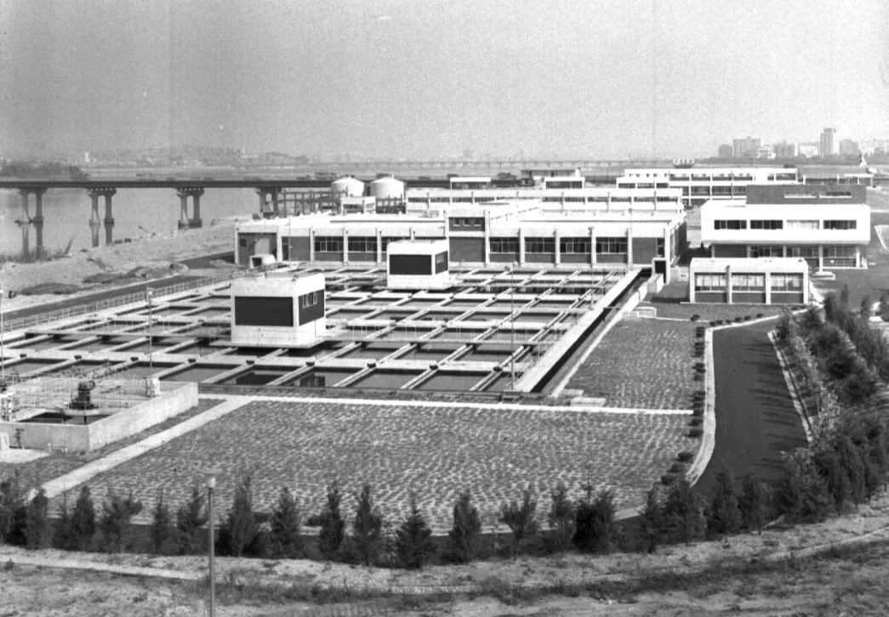
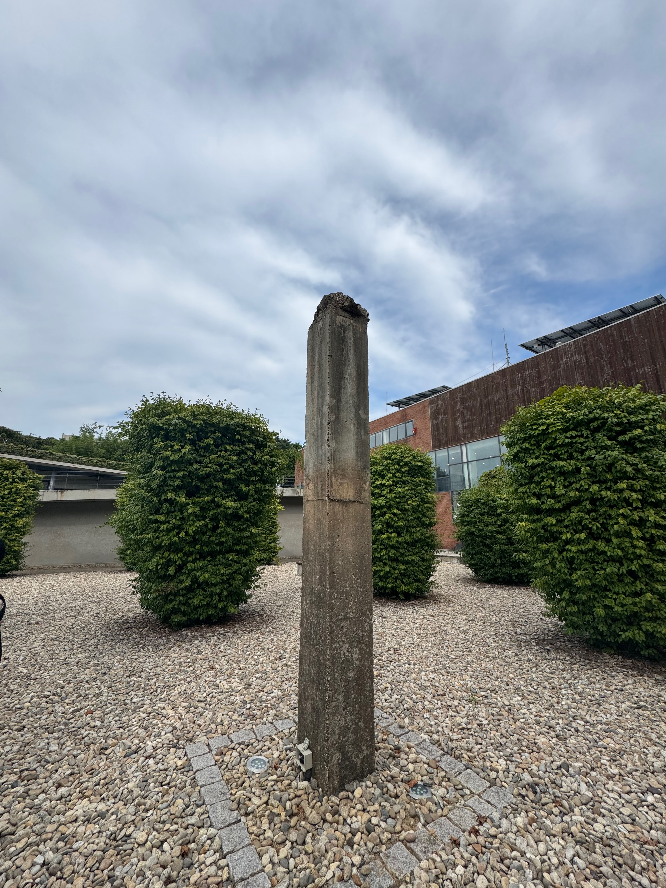

안녕하세요, 씨티즌 여러분! 🌿 오늘은 한강 위 작은 섬에서 만날 수 있는, 느낌 좋은 걷기 경험에 대해 이야기해보려 해요. 바로, 선유도공원이에요. 서울 영등포구에 위치한 선유도공원은 걸음마다 만나는 푸른 식물들에 매료되는 매력적인 공원인데요, 왜 많은 사람들이 이곳을 찾고, 어떤 점에서 걷는 재미가 다른지 함께 살펴볼까요?

선유도공원 수질정화원. ©weeklycity
첫 번째 이유 : 다양한 시선으로 설계된 산책로
선유도공원에 들어서면 가장 먼저 눈에 띄는 것은 높낮이가 다양한 산책로예요. 한 공간을 여러 각도에서 경험할 수 있도록 설계된 이 길들은 모두 서로 연결되어 있어 어디로 걸어도 길을 잃을 걱정은 없어요. 하지만 각 경로마다 선사하는 경험은 완전히 달라요. 높은 다리 위에서는 공원 전체를 내려다보는 시원한 전망이, 물가 가까이 난 좁은 길에서는 수생식물들의 생생한 모습이, 나무가 우거진 산책로에서는 고요함이 여러분을 기다리고 있죠. 같은 나무를 볼 때에도, 낮은 길에선 그늘이 되어주기도 하고, 높은 길에선 나무와 눈높이를 같이 할 수 있기도 해요. 이렇게 선유도는 걷는 길에 따라 전혀 다른 풍경과 감정을 선물해주는 특별한 공간이에요.
재미있는 점은 선유도공원의 산책로가 시간의 흐름에 따라 다양한 경험을 선사한다는 거예요. 공원을 설계하신 조경가 정영선 선생님은 하퍼스 바자와의 인터뷰에서 조경의 화두는 '시간'이라고 강조하셨어요. 공원은 때로는 탁 트인 전망을 보여주다가, 때로는 계절에 따라 변화하는 식물들로 시선을 집중시키죠. 정영선 선생님은 "아침과 저녁이 다르고, 봄과 겨울이 다르고, 올해와 10년 후가 다르다"고 설명하셨어요. 특히 "아침에 해가 뜰 때 정원의 색깔이 어떻게 변하고 어떤 분위기로 바뀌는지 보는 일"이 중요하다고 하셨죠. 이런 시간에 따른 변화무쌍한 경관의 전환이 선유도공원을 걷는 내내 지루할 틈을 주지 않아요. 그래서 공원을 걷다 보면, 땅속에서 싹이 올라오고 자라면서 꽃이 피고 시드는 과정을 전부 다 읽고 이해한 느낌을 받을 수 있다고 해요.
두 번째 이유 : 시간을 넘나드는 걷기 경험
선유도공원의 또 다른 매력은 과거와 현재를 동시에 걸을 수 있다는 점이에요. 이곳은 1978년부터 2000년까지 서울 시민의 수돗물을 책임지던 선유정수장이었어요. 새 정수장이 생기면서 기능을 잃게 되었는데요, 정수장의 흔적을 완전히 지우는 대신 흔적을 살린 독특한 공원으로 변신했죠. 산업 시설의 거친 풍경과 푸른 녹지가 어우러진 특별한 정원이 탄생한 거예요.
선유도의 정수장 시절 모습. ©서울기록원
공원 곳곳에서는 과거 정수장의 모습을 그대로 간직한 공간들을 만날 수 있어요. 공원의 설계자인 정영선 조경가의 회사인 서안조경에 따르면, '녹색 기둥의 정원'은 지붕이 없어진 정수장의 기둥들 사이로 덩굴식물이 자라나는 독특한 풍경을 보여주고, '수생식물원'은 과거 여과지였던 공간에 다양한 수생식물이 자라는 모습을 담고 있다고 해요. 특히 '시간의 정원'에서는 콘크리트와 금속의 차가운 질감과 생명력 있는 식물이 만들어내는 매혹적인 대비를 경험할 수 있죠.
녹색 기둥의 정원 모습. ©weeklycity
그래서 공원을 걷다 보면 우리는 산업 시설이 자연과 조화를 이루는 모습을 볼 수 있어요. 한국 최초의 환경재생 생태공원인 선유도는 과거의 흔적을 지우지 않고 현재와 공존하게 함으로써 도시 재생의 새로운 가능성을 보여준 셈이죠.
세 번째 이유 : 떠먹여주는 감상
선유도공원의 세 번째 매력은 설계자가 의도한 방향으로 공간을 경험하도록 안내하는 명확한 동선이에요. 정영선 조경가는 방문객들이 정수장의 흔적과 새롭게 조성된 정원을 특정한 순서와 방식으로 경험하도록 산책로를 세심하게 설계했어요. 마치 재미있는 이야기책을 읽듯이, 선유도공원은 시작과 중간, 그리고 클라이맥스가 있는 공간 경험을 선사해요.
수질정화원에서 시작해 물놀이터를 거쳐 공원의 핵심인 선큰공간으로 이어지는 물의 흐름을 따라가다 보면, 녹색기둥의 정원, 수생식물원, 시간의 정원을 차례로 만나게 돼요. 이런 명확한 동선은 방문객들에게 '이렇게 보세요'라고 은근히 제안하는 느낌이에요. 그래서 선유도공원을 걷다 보면 설계자가 전하고자 했던 메시지인 ‘낡은 시설의 재활용과 자연의 회복’을 자연스럽게 이해하게 되죠.
사실, 이런 조경 설계는 최신 유행과는 약간 거리가 있어요. 예시로, 2022년에 만들어진 동탄 국제작가정원은 전혀 다른 접근법을 보여줘요. 세계적인 조경가 캐서린 구스타프슨이 설계한 동탄 국제작가정원은 '이렇게 걸으세요'라는 제안 대신 '어디든 가보세요'라고 말하는 듯해요. 동탄역에서 반석산으로 이어지는 물의 흐름을 테마로 한 이 공간은 물길, 돌길, 연못, 잔디광장이 자연스럽게 이어지며 방문객들이 자유롭게 즐길 수 있도록 설계되었어요. 구스타프슨은 한 강연에서 "조경은 여정이에요. 고정된 것은 없고, 모든 것은 시간이 지남에 따라 변화해요"라고 했어요. 이런 접근법은 방문객들에게 더 많은 자유와 해석의 여지를 주죠.
선유도공원과 동탄 국제작가정원의 차이는 마치 소설책과 시집의 차이 같아요. 소설책이 작가가 정한 순서대로 읽어나가며 이야기를 이해하게 한다면, 시집은 내가 원하는 페이지부터 읽으며 나만의 느낌을 만들어갈 수 있죠. 두 공원 모두 매력적이지만, 걷는 방식과 경험하는 방식에서 확실한 차이가 있어요.
이런 차이는 공원이 만들어진 시기와 사회적 변화를 보여주기도 해요. 2000년대 초반에 만들어진 선유도공원은 한국 최초의 환경재생 생태공원으로서 교육적 메시지를 전달하는 데 중점을 두었다면, 2022년에 완공된 동탄 국제작가정원은 방문객의 자유로운 경험을 더 중시하는 요즘 추세를 보여주고 있어요. 두 가지 설계 방식 모두 각자의 시대와 장소에 맞는 정답이라고 할 수 있어요. 선유도의 명확한 이야기가 주는 감동이 있고, 동탄의 자유로운 해석이 주는 즐거움이 있으니까요. 결국 공원은 설계자의 의도와 이용자의 경험이 만나는 살아있는 공간이 아닐까요?
걷기의 즐거움을 새롭게 발견하는 공간
선유도공원은 단순히 걷는 공간이 아니라, 걷기의 즐거움을 새롭게 일깨워주는 특별한 장소예요. 다양한 시선과 경험을 제공하는 산책로, 과거와 현재를 잇는 시간 여행 같은 경험, 친절하게 전달되는 명확한 감상 포인트까지… 이 모든 요소가 어우러져 선유도만의 독특한 걷기 경험을 만들어내고 있어요.
다가오는 주말엔 여러분도 선유도공원이나 가까운 공원을 찾아가보는 건 어떨까요? 선유도처럼 의도된 동선을 따라가며 공원의 이야기를 읽어보기도 하고, 동탄 국제작가정원처럼 자유롭게 발길 닿는 대로 걸어보는 것도 좋아요. 공원마다 다른 매력을 발견하고, 도시 속 자연을 새롭게 만나는 기회가 될 거예요. 같은 길도 어떻게 걷느냐에 따라 전혀 다른 이야기가 펼쳐지니까요.🌿🚶♀️🌉